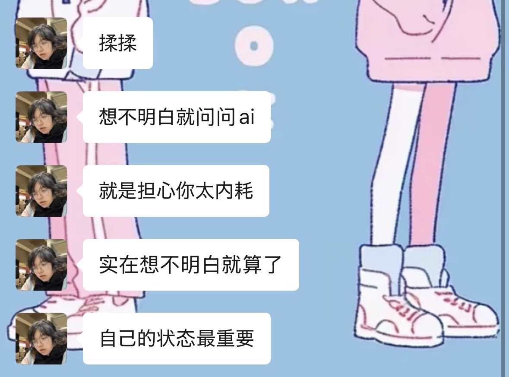

Aoi M
@aoim33
关于咴咴
她和我当时只是在杭州见过面
虽然只有一个下午加晚上，但足以对她留下非常深刻的印象了
具体的对话已经模糊不清，不过她在延安路步行街上对我说过的那些在传播学上适用的理论，至今也影响着我
甚至可以说是重塑了我的一部分人生观
我仍旧记得在一公园通向知味观的霓虹灯廊桥下对我说的一句话
过去的事就让它过去吧，一直开心比什么都重要
你经历了这么多还能这么乐观，已经很厉害了
Au revoir mon amie
Merci beaucoup
🕯️
